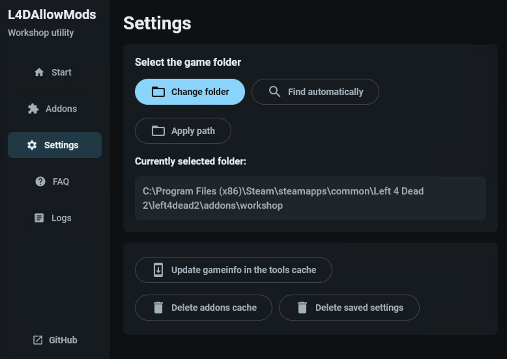
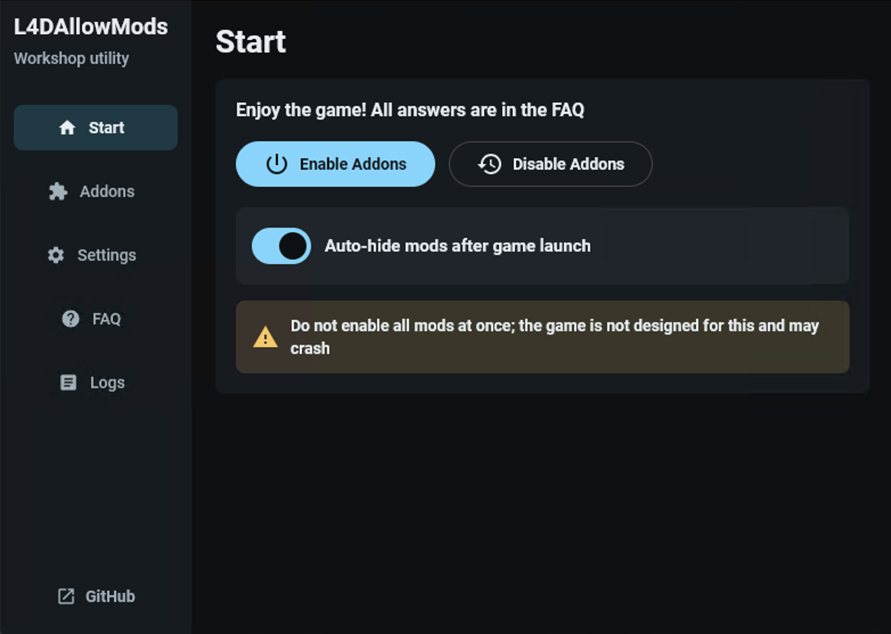
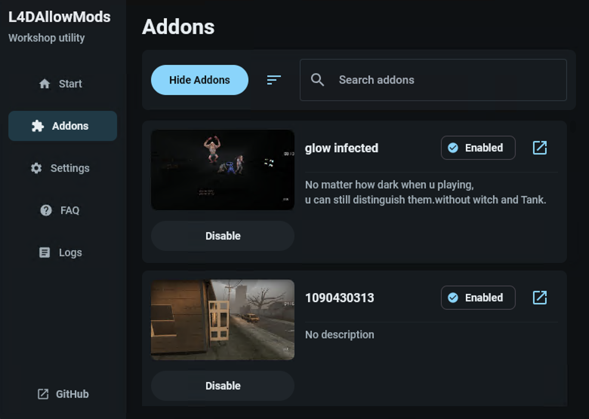
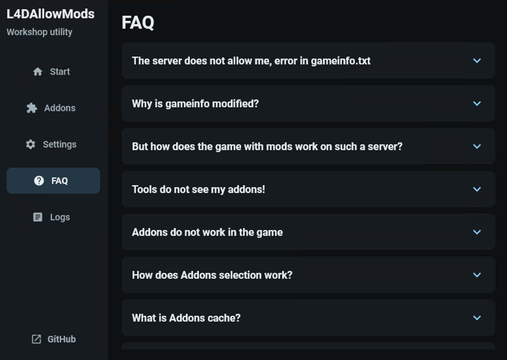

Restriction bypass
Enable Workshop addons and cheat-style plugins in Versus and on servers where addons are normally blocked.
Addon restriction bypass for Left 4 Dead 2
L4D Allow Mods prepares Workshop .vpk files, updates the game's
gameinfo.txt, and lets you use custom addons and cheat-style
plugins where Left 4 Dead 2 normally blocks them.



Built for restricted-server modding
Enable Workshop addons and cheat-style plugins in Versus and on servers where addons are normally blocked.
The app reads your addons/workshop folder and shows addon titles, previews, descriptions, and links.
Refresh cached gameinfo.txt data, delete addon cache, and restore saved settings from the Settings screen.
No injection, executable patching, or runtime memory editing. The tool only forces Workshop addons through gameinfo.txt.
Application screens

Get the app
Install the MSI or EXE build, choose your Left 4 Dead 2 folder, select the addons or cheat-style plugins you want, and enable the prepared setup before launching the game or joining a restricted server.
Support the project
Stars help other Left 4 Dead 2 players discover the bypass utility and make it easier to track interest in future improvements.
L4D Allow Mods is a cheat-oriented addon restriction bypass tool. It is not a game binary modification and does not use injection or runtime memory patching, so VAC is not expected to trigger from the tool's mechanism itself. Using it on public or competitive servers may still violate server rules, community rules, or fair-play expectations. Use it at your own risk and keep backups of important game files when experimenting with mods.